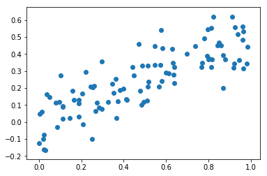
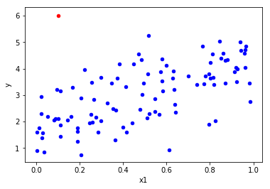

2DO
- Paraphrase text about outliers and high leverage points. It's just copy/paste
- Check (g) carefully. I answered in a qualitative way. I believe it's correct but it's different from regular solutions.
- JR: in (g) the analysis done was univariate, not bivariate as indicated, should be corrected either way.
- JR: for me, all good, except revision of (g)
Exercise 3.14
import pandas as pd
import numpy as np
import matplotlib.pyplot as plt
import statsmodels.api as sm #to use statsmodel
import statsmodels.formula.api as smf #to use statsmodel with R-style formulas
from statsmodels.stats import outliers_influence
%matplotlib inline
/Users/disciplina/anaconda3/envs/islp/lib/python3.6/site-packages/statsmodels/compat/pandas.py:56: FutureWarning: The pandas.core.datetools module is deprecated and will be removed in a future version. Please use the pandas.tseries module instead.
from pandas.core import datetools
(a)
np.random.seed(5) # Python and R random generators give different values
x1 = np.random.uniform(size=100)
x2 = 0.5 * x1 + np.random.normal(size=100) / 10
y = 2 + 2 * x1 + 0.3 * x2 + np.random.normal(size=100)
# http://stackoverflow.com/questions/22213298/creating-same-random-number-sequence-in-python-numpy-and-r
Model form:
\[ Y = \beta_0 + \beta_1 X_1 + \beta_2 X_2 + \epsilon = 2 + 2 X_1 + 0.3 X_2 + \epsilon. \](b)
# get correlations
np.corrcoef(x1,x2)
array([[ 1. , 0.81936924],
[ 0.81936924, 1. ]])
The correlation coefficient between \(X_1\) and \(X_2\) is 0.819.
# draw scatterplot
plt.scatter(x1,x2);

(c)
# define data
X = pd.DataFrame({'x1':x1, 'x2':x2})
X = sm.add_constant(X) # no constant is added by the model unless we're using formulas, so we have to add it
# create model
model = sm.OLS(y, X)
# fit regression model
results = model.fit()
# print results
results.summary()
| Dep. Variable: | y | R-squared: | 0.444 |
|---|---|---|---|
| Model: | OLS | Adj. R-squared: | 0.433 |
| Method: | Least Squares | F-statistic: | 38.74 |
| Date: | Thu, 30 Nov 2017 | Prob (F-statistic): | 4.31e-13 |
| Time: | 20:25:36 | Log-Likelihood: | -123.67 |
| No. Observations: | 100 | AIC: | 253.3 |
| Df Residuals: | 97 | BIC: | 261.1 |
| Df Model: | 2 | ||
| Covariance Type: | nonrobust |
| coef | std err | t | P>|t| | [0.025 | 0.975] | |
|---|---|---|---|---|---|---|
| const | 1.8158 | 0.162 | 11.231 | 0.000 | 1.495 | 2.137 |
| x1 | 2.0758 | 0.488 | 4.257 | 0.000 | 1.108 | 3.044 |
| x2 | 0.7584 | 0.817 | 0.929 | 0.355 | -0.862 | 2.379 |
| Omnibus: | 0.718 | Durbin-Watson: | 1.960 |
|---|---|---|---|
| Prob(Omnibus): | 0.698 | Jarque-Bera (JB): | 0.574 |
| Skew: | -0.185 | Prob(JB): | 0.750 |
| Kurtosis: | 2.981 | Cond. No. | 12.5 |
According to the results we have:
- \(\hat{\beta_0} = 1.8158\)
- \(\hat{\beta_1} = 2.0758\)
- \(\hat{\beta_2} = 0.7584\)
These values are estimators of the true coefficients, which have the following values:
- \(\beta_0 = 2\)
- \(\beta_1 = 2\)
- \(\beta_2 = 0.3\)
As we can see, there are some differences between the coefficients, especially in the case of \(\hat{\beta_2}\) (0.7584 vs. 0.3).
\(H_0 : \beta_1 = 0\) . The rejection of the null hypothesis depends on the t-statistic (t). In the case of \(\beta_1\), this value is high. If the t-statistics is high, the p-value will be low. The p-value is the probability of observing any value equal to |t| or larger (P>|t|), assuming that the coefficient is zero. Thus, if the p-value is low we should reject the null hypothesis and accept the alternative hypothesis.
\(H_0 : \beta_2 = 0\) . In this case the t-statistic is low (0.929) and the p-value is high (0.355). Accordingly, the null hypothesis can't be rejected.
Alternative solution
A different way to approximate the equation using R-style formula in StatsModel.
# define data
df = pd.DataFrame({'x1':x1, 'x2':x2, 'y':y}) # dataframe to be read like R; we don't need to add constant because we will use formulas
# create model
mod = smf.ols(formula='y ~ x1 + x2', data=df) # R-style command
# fit model
res = mod.fit()
# print results
print (res.summary())
OLS Regression Results
==============================================================================
Dep. Variable: y R-squared: 0.444
Model: OLS Adj. R-squared: 0.433
Method: Least Squares F-statistic: 38.74
Date: Thu, 30 Nov 2017 Prob (F-statistic): 4.31e-13
Time: 20:25:38 Log-Likelihood: -123.67
No. Observations: 100 AIC: 253.3
Df Residuals: 97 BIC: 261.1
Df Model: 2
Covariance Type: nonrobust
==============================================================================
coef std err t P>|t| [0.025 0.975]
------------------------------------------------------------------------------
Intercept 1.8158 0.162 11.231 0.000 1.495 2.137
x1 2.0758 0.488 4.257 0.000 1.108 3.044
x2 0.7584 0.817 0.929 0.355 -0.862 2.379
==============================================================================
Omnibus: 0.718 Durbin-Watson: 1.960
Prob(Omnibus): 0.698 Jarque-Bera (JB): 0.574
Skew: -0.185 Prob(JB): 0.750
Kurtosis: 2.981 Cond. No. 12.5
==============================================================================
Warnings:
[1] Standard Errors assume that the covariance matrix of the errors is correctly specified.
Alternative solution
This is an alternative solution using Scikit instead of StatsModel.
#create model
lr = LinearRegression()
#fit model
mod = lr.fit(X,y)
#get coefficients
mod.coef_
array([ 0. , 2.0758066 , 0.75840009])
(d)
X = pd.DataFrame({'x1':x1})
X = sm.add_constant(X)
model = sm.OLS(y, X)
results = model.fit()
print(results.summary())
OLS Regression Results
==============================================================================
Dep. Variable: y R-squared: 0.439
Model: OLS Adj. R-squared: 0.433
Method: Least Squares F-statistic: 76.72
Date: Thu, 30 Nov 2017 Prob (F-statistic): 5.93e-14
Time: 20:25:39 Log-Likelihood: -124.11
No. Observations: 100 AIC: 252.2
Df Residuals: 98 BIC: 257.4
Df Model: 1
Covariance Type: nonrobust
==============================================================================
coef std err t P>|t| [0.025 0.975]
------------------------------------------------------------------------------
const 1.8229 0.161 11.295 0.000 1.503 2.143
x1 2.4468 0.279 8.759 0.000 1.892 3.001
==============================================================================
Omnibus: 0.357 Durbin-Watson: 1.986
Prob(Omnibus): 0.836 Jarque-Bera (JB): 0.272
Skew: -0.127 Prob(JB): 0.873
Kurtosis: 2.963 Cond. No. 4.17
==============================================================================
Warnings:
[1] Standard Errors assume that the covariance matrix of the errors is correctly specified.
The coefficient value increased to 2.4468 and the null hypothesis can be rejected and the alternative hypothesis accepted because p-value is zero. It can be said that this results are in line with our expectations from (c).
(e)
X = pd.DataFrame({'x2':x2})
X = sm.add_constant(X)
model = sm.OLS(y, X)
results = model.fit()
print(results.summary())
OLS Regression Results
==============================================================================
Dep. Variable: y R-squared: 0.340
Model: OLS Adj. R-squared: 0.333
Method: Least Squares F-statistic: 50.53
Date: Thu, 30 Nov 2017 Prob (F-statistic): 1.92e-10
Time: 20:25:40 Log-Likelihood: -132.23
No. Observations: 100 AIC: 268.5
Df Residuals: 98 BIC: 273.7
Df Model: 1
Covariance Type: nonrobust
==============================================================================
coef std err t P>|t| [0.025 0.975]
------------------------------------------------------------------------------
const 2.1250 0.157 13.572 0.000 1.814 2.436
x2 3.6070 0.507 7.108 0.000 2.600 4.614
==============================================================================
Omnibus: 1.537 Durbin-Watson: 1.828
Prob(Omnibus): 0.464 Jarque-Bera (JB): 1.597
Skew: -0.272 Prob(JB): 0.450
Kurtosis: 2.704 Cond. No. 5.89
==============================================================================
Warnings:
[1] Standard Errors assume that the covariance matrix of the errors is correctly specified.
The coefficient value increased to 3.6070 and the null hypothesis can be rejected and the alternative hypothesis accepted because p-value is zero.
These results are significantly different from (c). In (c) the coefficient associated with \(x_2\) had a lower value and the p-value suggested that the null hypothesis couldn't be rejected (coefficient value could be zero). Now, the coefficient value is higher (even higher than the coefficient value resulting from the case where only \(x_1\) is used) and the null hypothesis can be rejected and the alternative hypothesis accepted.
(f)
The results do not contradict. What's happening here is a collinearity phenomenon. As suggested by the high correlation values and by the scatter plot (and, of course, from the generation of Y), we can linearly predict \(x_1\) from \(x_2\) (and vice-versa) with a substantial degree of accuracy. This is a clue of collinearity that is confirmed by the regression model. When both variables are combined in the same linear model, one of them loses explanatory power because the variance it explains is already being explained by the other variable. Accordingly, if considered individually, both variables lead to the rejection of the null hypothesis but, if considered together, one of the variables is dismissable.
Finally, the values of the coefficients agree what we know from the underlying model. If one writes \(X2\) in terms of \(X1\), substitutes it in the model and adds both coefficients of \(X1\), we get 2.15. This value is well within the confidence interval calculated in (d), namely [1.892; 3.001]. Likewise, for \(X2\) the expected value of the coefficient is 4.3 which is inside the [2.600; 4.614] interval calculated in (e).
(g)
# add observation
x1 = np.append(x1, 0.1) #to x1
x2 = np.append(x2, 0.8) #to x2
y = np.append(y, 6) #to y
# add to dataframe (easier for outlier analysis plots)
sample = {'x1': .1, 'x2': .8, 'y': 6} #create point
df = df.append(sample, ignore_index=True) #append sample to existing dataframe
Models analysis
# model (c)
X = pd.DataFrame({'x1':x1, 'x2':x2})
X = sm.add_constant(X) # no constant is added by the model unless we're using formulas, so we have to add it
model = sm.OLS(y, X)
results = model.fit()
print(results.summary())
OLS Regression Results
==============================================================================
Dep. Variable: y R-squared: 0.425
Model: OLS Adj. R-squared: 0.414
Method: Least Squares F-statistic: 36.26
Date: Thu, 30 Nov 2017 Prob (F-statistic): 1.64e-12
Time: 20:26:20 Log-Likelihood: -129.50
No. Observations: 101 AIC: 265.0
Df Residuals: 98 BIC: 272.8
Df Model: 2
Covariance Type: nonrobust
==============================================================================
coef std err t P>|t| [0.025 0.975]
------------------------------------------------------------------------------
const 1.8697 0.168 11.111 0.000 1.536 2.204
x1 1.2421 0.432 2.876 0.005 0.385 2.099
x2 2.2711 0.698 3.254 0.002 0.886 3.656
==============================================================================
Omnibus: 0.673 Durbin-Watson: 1.803
Prob(Omnibus): 0.714 Jarque-Bera (JB): 0.465
Skew: -0.165 Prob(JB): 0.792
Kurtosis: 3.035 Cond. No. 10.2
==============================================================================
Warnings:
[1] Standard Errors assume that the covariance matrix of the errors is correctly specified.
# model (d)
X = pd.DataFrame({'x1':x1})
X = sm.add_constant(X) #no constant is added by the model unless we're using formulas, so we have to add it
model = sm.OLS(y, X)
results = model.fit()
print(results.summary())
OLS Regression Results
==============================================================================
Dep. Variable: y R-squared: 0.363
Model: OLS Adj. R-squared: 0.357
Method: Least Squares F-statistic: 56.46
Date: Thu, 30 Nov 2017 Prob (F-statistic): 2.60e-11
Time: 20:26:25 Log-Likelihood: -134.68
No. Observations: 101 AIC: 273.4
Df Residuals: 99 BIC: 278.6
Df Model: 1
Covariance Type: nonrobust
==============================================================================
coef std err t P>|t| [0.025 0.975]
------------------------------------------------------------------------------
const 1.9419 0.175 11.116 0.000 1.595 2.288
x1 2.2829 0.304 7.514 0.000 1.680 2.886
==============================================================================
Omnibus: 12.832 Durbin-Watson: 1.773
Prob(Omnibus): 0.002 Jarque-Bera (JB): 21.470
Skew: 0.522 Prob(JB): 2.18e-05
Kurtosis: 5.003 Cond. No. 4.14
==============================================================================
Warnings:
[1] Standard Errors assume that the covariance matrix of the errors is correctly specified.
# model (e)
X = pd.DataFrame({'x2':x2})
X = sm.add_constant(X) #no constant is added by the model unless we're using formulas, so we have to add it
model = sm.OLS(y, X)
results = model.fit()
print(results.summary())
OLS Regression Results
==============================================================================
Dep. Variable: y R-squared: 0.377
Model: OLS Adj. R-squared: 0.370
Method: Least Squares F-statistic: 59.84
Date: Thu, 30 Nov 2017 Prob (F-statistic): 8.79e-12
Time: 20:26:30 Log-Likelihood: -133.59
No. Observations: 101 AIC: 271.2
Df Residuals: 99 BIC: 276.4
Df Model: 1
Covariance Type: nonrobust
==============================================================================
coef std err t P>|t| [0.025 0.975]
------------------------------------------------------------------------------
const 2.0962 0.154 13.604 0.000 1.790 2.402
x2 3.7581 0.486 7.736 0.000 2.794 4.722
==============================================================================
Omnibus: 1.784 Durbin-Watson: 1.803
Prob(Omnibus): 0.410 Jarque-Bera (JB): 1.826
Skew: -0.299 Prob(JB): 0.401
Kurtosis: 2.726 Cond. No. 5.68
==============================================================================
Warnings:
[1] Standard Errors assume that the covariance matrix of the errors is correctly specified.
Effect on models: Model (c). R-squared decreased, which means that the prediction capacity of the model was reduced. The value of the regression coefficients changed: x1 coefficient decreased and x2 coefficient increased. As a consequence, x2 became the coefficient with higher value. The null hypothesis is now rejected in both variables. Model (d). The only significant change was the reduction of R-squared. * Model (e). The only significant change was a small increase of R-squared.
Outliers and high leverage points analysis
Outliers
An outlier is a point for which \(y_i\) is far from the expected range predicted by the fit of the model. This raises the question of whether it is representative of the population.
Outliers can be identified from a univariate, bivariate, or multivariate perspective based on the number of variables (characteristics) considered. The researcher should utilize as many of these perspectives as possible, looking for a consistent pattern across perspectives to identify outliers.
Cases that fall markedly outside the range of the other observations will be seen as isolated points in the scatterplot. A drawback of the bivariate method in general is the potentially large number of scatterplots that arise as the number of variables increases. For three variables, it is only three graphs for all pairwise comparisons. But for five variables, it takes 10 graphs, and for 10 variables it takes 45 scatterplots! Since this analysis doesn't involve more than two variables, we can perform all pairwise comparisons.
High leverage points
We just saw that outliers are observations for which the response yi is unusual given the predictor xi. In contrast, observations with high leverage have an unusual value for xi. In statistics and in particular in regression analysis, leverage is a measure of how far away the independent variable values of an observation are from those of the other observations.
In a simple linear regression, high leverage observations are fairly easy to identify, since we can simply look for observations for which the predictor value is outside of the normal range of the observations. With a single predictor, an extreme x value is simply one that is particularly high or low.
But in a multiple linear regression with many predictors, it is possible to have an observation that is well within the range of each individual predictor’s values, but that is unusual in terms of the full set of predictors. With multiple predictors, extreme x values may be particularly high or low for one or more predictors, or may be "unusual" combinations of predictor values (e.g., with two predictors that are positively correlated, an unusual combination of predictor values might be a high value of one predictor paired with a low value of the other predictor).
# bivariate analysis (x1,x2)
sample = df.iloc[-1:] #to get the last observation
other = df.iloc[:-1] #to get all the observations but the last
ax = other.plot(kind='scatter',x='x1',y='x2', color='blue'); #plot all observations but the last in blue
sample.plot(ax=ax, kind='scatter',x='x1',y='x2', color='red'); #plot last observation added in red

- There is an unusual combination of predictor values, so it looks like an high leverage point.
Note: we are not comparing predictors with responses nor evaluating if yi is far from the value predicted by the model. Therefore, it doesn't make sense to discuss if it's an outlier or not based on this plot.
# bivariate analysis (x1,y)
sample = df.iloc[-1:] # to get the last observation
other = df.iloc[:-1] # to get all the observations but the last
ax = other.plot(kind='scatter',x='x1',y='y', color='blue'); # plot all observations but the last in blue
sample.plot(ax=ax, kind='scatter',x='x1',y='y', color='red'); # plot last observation added in red

- The red point does not follow the trend, so it looks like an outlier.
- The red point doesn't have an unusual x1 value, so it doesn't look like an high leverage point.
# bivariate analysis (x2,y)
sample = df.iloc[-1:] # to get the last observation
other = df.iloc[:-1] # to get all the observations but the last
ax = other.plot(kind='scatter',x='x2',y='y', color='blue'); # plot all observations but the last in blue
sample.plot(ax=ax, kind='scatter',x='x2',y='y', color='red'); # plot last observation added in red

- The red point follows the trend, so it doesn't look like an outlier.
- The red point has an extreme x2 value, so it looks like an high leverage point.
In summary: the observation added influences significantly the model, in particular if we consider the regression model that includes x1 and x2. In this case, x2 passed from a neglected variable to a significant variable. This means that even being just 1 observation in 100, this observation reduced the existing phenomenon of collinearity. Also, the R-squared of the model reduced, which signifies a decrease in the model predicition capacity.
According to the scatter plots, the observation added seems to be both an outlier and and an high leverage point. This conclusion can be taken from the visual observation of the observation added when confronted with the remaining observations. The added observations shows an unusual combination of predictor values, extreme predictor values and a substantial different behaviour when compared with other observations in several cases
References
- https://onlinecourses.science.psu.edu/stat501/node/337
- Hair, J. F., Black, B., Babin, B., Anderson, R. E., & Tatham, R. L. (2010). Multivariate Data Analysis (7th ed.). Upper Saddle River, NJ: Prentice-Hall